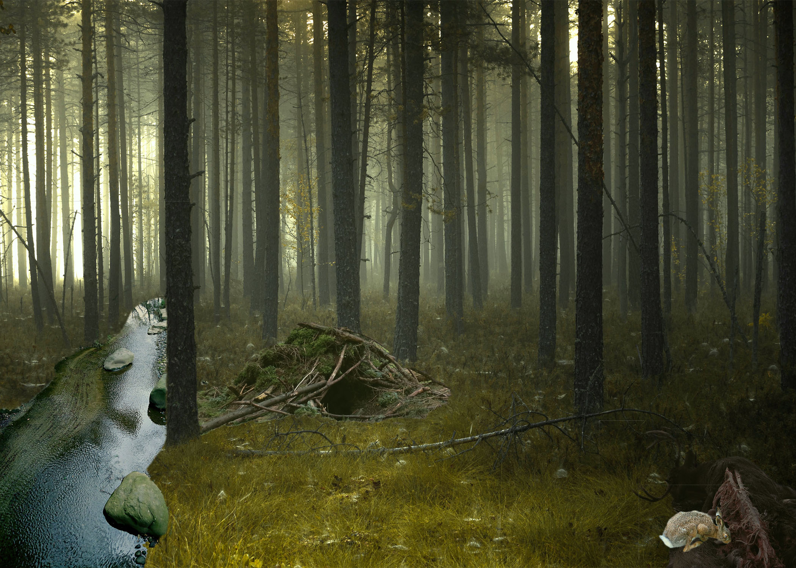

This peculiar bunny lives in this mysterious realm “Shadowood” I call, it’s a place shrouded in a never-ending dusk where reality seems to change and time seems to pass differently. The area, which can only be reached by way of a huge tree that has been split in two, only opens its doors at night and attracts travelers with its eerie charm and limitless mysteries. Whip lurks in its depths, using his deception to lure in naive people and play with their minds until he's happy with the terror he causes, and ultimately they never return again.